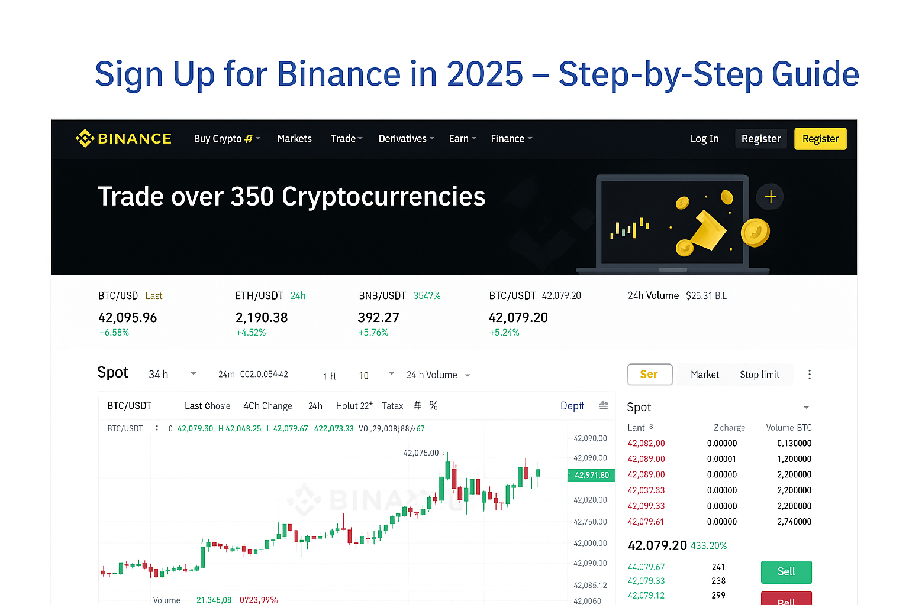

Sign Up for Binance in 2025 – Your Easy Step-by-Step Guide
Looking to kickstart your journey into trading Bitcoin, Ethereum, and other cryptocurrencies? Binance stands as the world's most trusted and popular crypto exchange. Here's how to **create your Binance account** in just a few straightforward steps.
👉 Sign Up with Binance (Get a Fee Discount!)
🔐 Why Choose Binance?
- Competitive low trading fees
- Access to over 350 diverse cryptocurrencies
- Robust, advanced security features
- Trusted by millions of users globally for secure trading
📌 How to Register on Binance: A Quick Guide
- Simply click the registration button above.
- Enter your email or mobile number and set up a strong, secure password.
- Complete the mandatory identity verification (KYC) process.
- Fund your account using various methods: bank transfer, credit card, or crypto deposits.
- You're all set! Start trading cryptocurrencies with confidence.
📸 Binance Dashboard Example: A Sneak Peek

❓ Frequently Asked Questions (FAQs)
Is Binance a secure platform?
Absolutely. Binance employs 2FA (Two-Factor Authentication), cold wallet storage for digital assets, and maintains the SAFU (Secure Asset Fund for Users) insurance fund to safeguard user funds and data.
Is KYC (Know Your Customer) verification mandatory?
Yes. For compliance and to access all platform features, most users are required to complete identity verification.
Is Binance available in my country?
Binance proudly supports the vast majority of countries worldwide, including major regions like the UK, Brazil, India, Vietnam, and the Philippines, among many others.
✅ Create Your Binance Account Now!